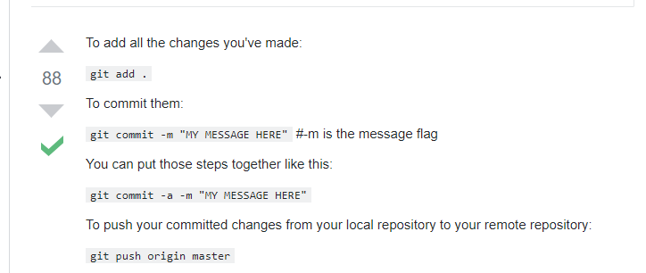
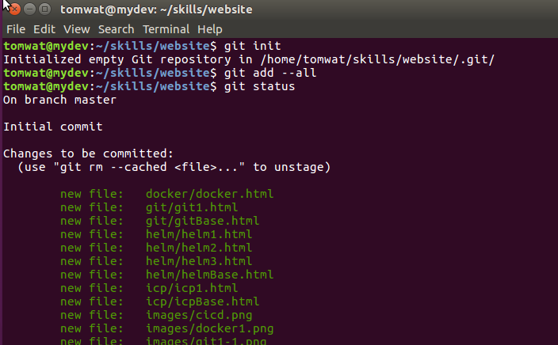
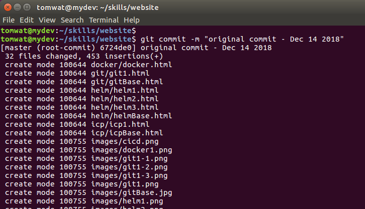
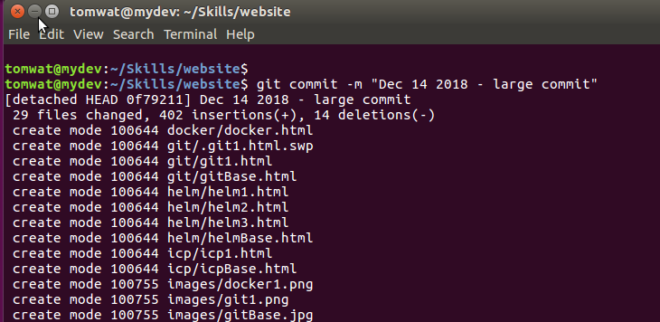
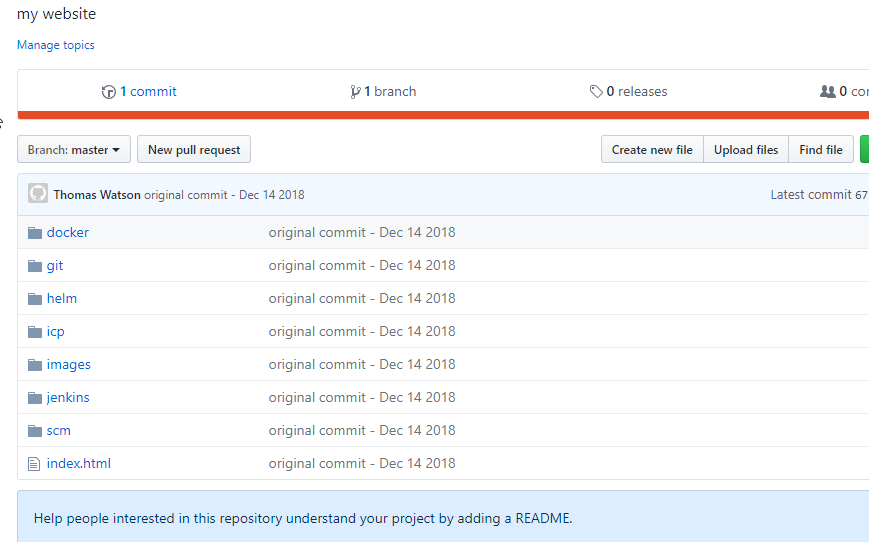

I have Git locally on my workstation, where I develop my website.
I also have my local Git linked to http://github.com where my Kuberenetes can access it.
As I make changes to my website, I will push those to my repository:
https://github.com/tomwat/website.git
One time setup:
$ cd /home/tomwat/skills/myskills/website
$ git init
Initialized empty Git repository in /home/tomwat/skills/myskills/website/.git/
create the remote repository on github.com - tomwat/website
back on workstaion
$ git remote add origin https://github.com/tomwat/website.git
$ git push -u origin master
cd to where your files are - /home/tomwat/skills/myskills/website
$ git add .
$ git commit -m "initial commit - Dec 14 2018"
now my local repository is up to date
$ git push origin master
// verify files are now replicated on remote github
// other commands....
// develop new artifacts...
// show my untracked files and uncomitted files in my local git repo
$ git status
// add all my newly created artifacts to my local repo
$ git add --all
// commit all my recent work with message
$ git commit -m "Dec 14 2018 - my latest commit"
$ git status
// push lastest commit to remote repository
$ git push -u origin master




